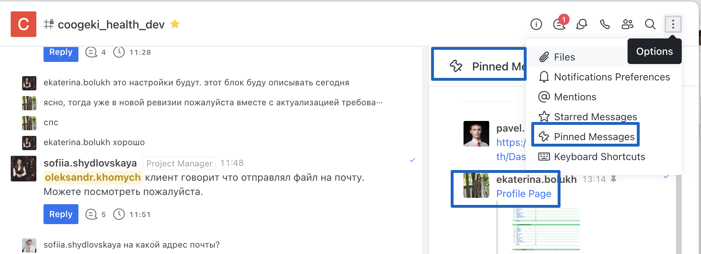
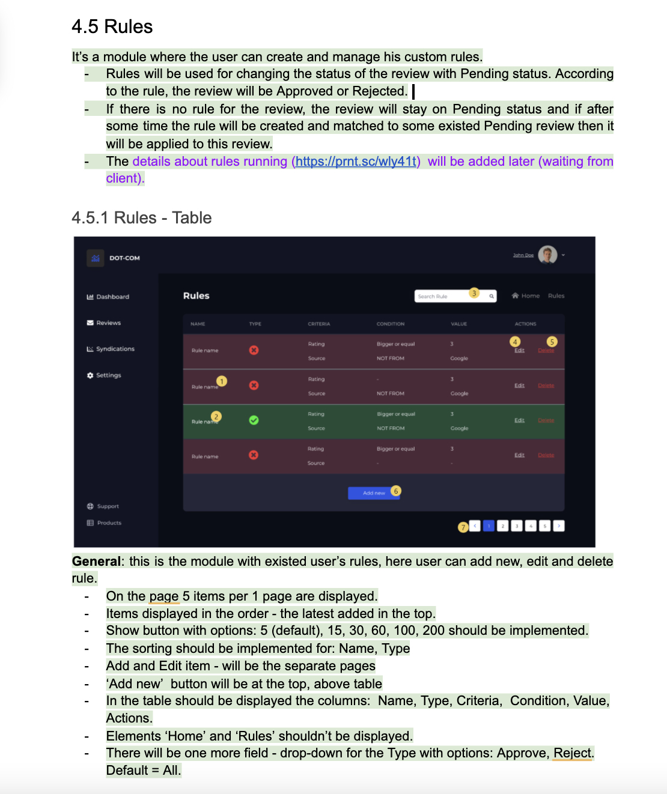
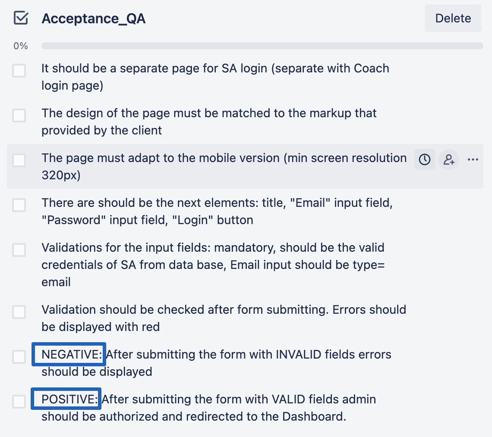

Методичка для менеджеров компании Join.To.IT
Kyiv, June 2021
Разработку веб приложения или сайта, подобно строительству здания, для того чтобы приступить непосредственно к разработке продукта, нужно определить и составить ряд важных документов к проекту:
- Mindmap
- Project Requirements - Главный документ проектных требований
- Прототип
- Дизайн
Mindmap
MindMap - это диаграмма связей, представляющая собой древовидную схему на которой для каждой роли приложения отображены главые модули и подмодули приложения.
MindMap помогает:
- фиксировать даже большие объемы информации;
- запоминать информацию (визуализация улучшает восприятие);
- анализировать информацию – такое изображение помогает найти все взаимосвязи между деталями;
- кроме того, MindMap позволяет увидеть и картину в целом, и ее мелкие детали.
Эта карта необходима при составлении rough estimate проекта.
Project Requirements
Проектные требования - это документ, в котором описаны все детали по работе приложения: цели, роли, функциональные и не функциональные требования. Это главный документ на проекте, который используется при разработке, по он всегда должен быть актуальным.
Прототип
Прототип - документ, что показывает схемы страниц проекта (wireframes), собранные в структуру и частично или полностью имитирующие работу интерактивных элементов и серверной части.
Зачем разрабатывать прототип:
- Прототип — средство быстрого согласования. Нет способа быстрее согласовать все детали проекта, чем сделать его эскизное визуальное представление.
- Прототип экономит время: изменения, которые в инструменте прототипирования занимают секунды, в фотошопе, готовой верстке или на готовом сайте могут занимать часы, дни и недели.
- При отсутствии прототипа — все подводные камни всплывают на производственных этапах или даже после старта проекта. Лучше найти проблему в проекте на этапе прототипа.
- Прототип — это не дополнительный этап. Если прототипа нет, то вся работа по проектированию переходит на этап дизайна, а выполнять проектирование в Photoshop очень долго и дорого, а зачастую просто бесперспективно. Прототип не увеличивает объем работы, а уменьшает его.
- Прототип упрощает этап дизайна — когда есть схемы всех страниц, состав и расположение всех элементов, нарисовать макеты проще и дешевле. Это делает этап дизайна намного более предсказуемым.
- Прототип помогает заказчику формулировать свои требования — когда на его глазах быстро и понятно проект обретает форму, сразу становится очевидным, что требует корректировок и поправок. Исполнитель в свою очередь охотно вносит правки, ведь это просто.
- В хорошем прототипе работают все ссылки, демонстрируется работа интерактивных элементов, частично имитируется работа серверной части, а значит, мы можем на нем отработать все сложные этапы взаимодействия с посетителем.
- Прототип более понятно и емко читать, чем текстовое ТЗ, по этому прототип это важное дополнение к Project Requirement document.
Дизайн
Дизайн - это документ, где содержится визуализация всех страниц приложения с указанием стилей и размеров всем графическим элементам. По этому важно, если клиент предоставляет компании уже готовый дизайн, а не заказывает дизайн вашей команды, проверять этот дизайн на завершенность и соответствие требованиям.
Все перечисленные документы должны быть размещены на корпоративных ресурсах с соответственными доступами к ним. Cейчас это размещение - корпоративный аккаунт на Google Drive папка ‘7. Project files -> current year -> relevant month -> folder for current project).
Кроме выше перечисленного, для каждого проекта, должен быть разработан документ Project Profile Page. В этом документе находятся:
- Kickoff Checklist
- Estimate (rought/actual)
- Project status tracker
- other
Несколько основных правил:
- Документ всегда нужно держать в актуальном состоянии.
- Пример документа - https://docs.google.com/spreadsheets/d/1MBruxBro2JMflVTc6fMslGvyE3vngO7kONl2_l4aKng/edit#gid=2100170729.
- Обратите внимание на название документа и оформление всех таблиц в нем.
- Этот документ должен быть готов до того как подключить команду (QA team, developer team) к разработке.
- Этот документ должен быть “pinned” в rocket чате проекта:

тут - формат для вставки ссылки в текст, как на рисунке: [text](link)
ЯСНЫЕ ТРЕБОВАНИЯ - ОСНОВА УСПЕХА
Любой опытный архитектор может подтвердить: затея строить дом, без проектной документации - обречена на провал, так и в разработке.
ОПТИМАЛЬНЫЕ СПОСОБЫ РЕАЛИЗАЦИИ
Видя всю картину (логику, связанные модули, цели) легко принять решения о самых оптимальных способах реализации; порой не стоит тратить много ресурса на тот или иной модуль, а лучше направить больше внимания и бюджета на другой, ведь он важнее для бизнеса и не приоритетный для пользователя.
ОЧЕРТАНИЕ НАПРАВЛЕНИЙ РАЗВИТИЯ ПРОЕКТА
Важно понимать, что со временем будет добавляться в проект, чтоб предусмотреть изменения в его архитектуре, это сэкономит время на переделки кода в будущем.
УМЕНЬШЕНИЕ СТОИМОСТИ РАЗРАБОТКИ
Каждый специалист делает именно то, что требуется, не тратя время на эксперименты и правки.
ЛУЧШИЕ ИДЕИ РОЖДАЮТСЯ В СПОРАХ
Совместная работа команды при тестировании требований и составление Aceptance Criteria позволяет улучшить оригинальную идею.
НЕ НУЖНО ДЕРЖАТЬ ВСЁ В ГОЛОВЕ
Не нужно держать всю функциональность проекта в голове. Очень часто обсуждая что-либо устно или в переписках, решения забываются, а переписка теряется, по этому важно иметь актуальные требования в одном документе.
ПРАВИЛЬНЫЕ ПРИОРИТЕТЫ
Фиксирование на бумаге всей функциональности проекта - путь к правильной архитектуре и последовательности разработки.
ОЖИДАНИЯ ПОЛЬЗОВАТЕЛЕЙ
Техническая спецификация четко описывает, как функциональность приложения будет соответствовать ожиданиям пользователей и как они будут взаимодействовать с ним
ФИКСИРОВАНИЕ ЗАТРАТ НА РАЗРАБОТКУ
Проектные требования дают возможность оценить время на разработку каждого модуля определяя итоговый результат приложения (ни больше ни меньше).
СПОКОЙСТВИЕ И ГАРАНТИИ
Спецификация - это юридический документ, приложение к контракту, которая позволяет избегать каких-либо недопониманий между компанией и заказчиком.
Поскольку в основном в нашей компании сбор требований и разработка проходят параллельно, при сборе требования, важно следовать правильной последовательности. Нужно начинать собирать требования с тех же модулей, с которых будет начитаться user flow и двигаться с учетом связей разных модулей.
Рассмотрим простой пример системы:
Представим, что нам нужно разработать систему для ресторана. Описание бизнес-модели и рабочего процесса проекта:
- Посетители должны иметь возможность быстро зарегистрироваться в системе в несколько кликов.
- Система должна давать возможность юзеру сформировать заказ, добавить его в корзину, оплатить картой.
- Заказ можно забрать с ресторана или оформить доставкой. Юзер должен иметь возможность просматривать статус заказа.
- Посетитель должен знать, когда будет готов заказ.
- Ресторан должен иметь страницу для размещения информации о своих товарах и контактах.
- Ресторан должен иметь страницу для размещения своих продуктов.
- Система должна предоставлять возможность владельцу ресторана видеть заказы.
- И посетитель, и ресторан должны получить уведомления о событиях, происходящих во время каждого бизнес-процесса заказа.
И так у нас будет веб система для админ панели и мобильное приложения для юзера.
Пускай набор модулей для юзера и админа будет следующий:
| Роль | Набор модулей |
|---|---|
| Admin |
|
| User |
|
Вариант последовательности сбора требований (и разработки):
- Admin: Login/Logout
- Admin: Products page
- Admin: Dishes page
- User: AUTH/Logout
- Admin: Clients (можно позже, зависит от приоритета клиента)
- User: Home screen > Screen with Dishes
- User: Home screen > My basket, create order
- User: Payments (следует делать параллельно с оформлением и размещением заказа)
- User: My Orders
- Admin: Orders (так как данные приходят с базы данных, а в базу попадают с User системы, модуль My basket, create order, нужно делать после связанного модуля)
- Admin/User: Notifications (letters sending for events)
- Admin: Dashboards (так как тут отображаются данные, статистика по всем выше связанным модулям, следует делать после разработки связанных модулей)
- User: Profile settings
- Admin: Settings (так как в данной системе никаких настроек системы для модулей связанных нет, а только настройки профиля и информации о ресторане, приоритет модуля - после функциональных для бизнеса модулей, в ином случае - нужно делать в начале сбора требований)
- User: Contact US
- Краткость + Полнота/завершенность.Требования должны содержать всю необходимую информацию для команды разработки - все этапы реализации и понимание цели конкретного модуля, его взаимосвязь с другими модулями приложения и все нужные детали реализации (но не преизбыточные). При этом НЕ СТОИТ писать ИЗБЫТОЧНЫЕ требования, сокращайте описания требований, где это можно сделать (см разделы 3.3.6 4. Модуль с таблицей и CRUD)
- Понятность. Понятная спецификация содержит минимально необходимый объем информации, чтобы получить четкое представление о том, как должен выглядеть и работать завершенный продукт. Таким образом, не стоит детализировать возможные способы реализации, но нужно детализировать, как именно вы поймете, что достигли нужного результата.
- Правильная структура. Важно создать правильную структуру документа соответственно структуре модулей и подмодулей проекта. Для этого используйте заголовки соответственных уровней.
Смотрите примеры ниже.
Плохо (link to example doc)
Хорошо (link to example doc)
- Осуществимость.Этот критерий определяется возможностью технического осуществления требования в целом и в рамках бюджета, а так же в принципе балансом между ценностью и необходимостью для бизнеса и требуемым ресурсом.
- Не противоречие. Конфликты в описании одного и того же функционала в разных частях требований зачастую обусловлены не внимательностью; тем, что требования пишутся поэтапно и забывается то, что было описано ранее; требования пишутся разными людьми.
- Недвусмысленность. Частая проблема, на которую стоит обратить внимание. Точность формулировки в требованиях может по-разному интерпретироваться командой на проекте. Проблема возникает если, требования пишутся на «естественном языке», а не техническом, и разные члены команды (ПМ с клиентом и тестировщики с разработчиками) видят разный смысл в написанном. По этому требования для команды разработки, следует писать кратко и в техническом изъяснении, а не как для обычного пользователя системы или клиента.
Подход к созданию и структура Проектных Требований в разных компаниях отличается и зависит от специфики и методологии разработки ПО, длительности проектов и типа проектов, команды разработки.
Название документа в разных компаниях тоже может быть разная: Техническое Задание (ТЗ), Спецификация (Software Requirements Specification, SRS), Terms of Reference (TOR), Требование к ПО, Проектные требования и др.. Но по сути это одно и тоже, в отдельных случаях может отличаться от полноты и детализации требований, появления дополнительных отдельных документов или их составляющих (графиков, таблиц и т. д.).
В нашей компании Проектные требования содержат несколько главных блоков:
- Change log table - таблица версий документа (подробно в отдельном разделе)
- General Project Information - блок с описанием бизнес идеи, целей, проектных ролей и другое (подробно в отдельном разделе)
- General rules - блок с описанием каких-то общих правил для проекта, например: отображение страниц в момент загрузки страницы, реакция системы на прерывание интернета, для мобильных приложений - время работы в фоновом режиме, реакция на звонки и другое (подробно в отдельном разделе)
- Validations rules - блок с описанием общих правил валидации (подробно в отдельном разделе)
- Описание всех модулей системы - функциональных и не функциональных требований.
Название должно иметь следующий формат:
{номер версии}{имя проекта} - Project Requirements
Мы работаем по гибкой методологии разработки, которая подразумевает также гибкость в сборе проектных требований - поэтапность сбора проектных требований и разработки часто приводят к необходимости внесения изменений в проектные требования; часто изменения запрашивает сам клиент.
Внесение изменений в проектные требования следует производить путем создания новой версии документа с внесенными изменениями.
Change log table - это таблица в которой фиксируются изменения к проектной документации.
Какова цель версионности?
Представьте, что вы завершили описание требований скажем модуля авторизации, и дали их команде тестировщиков или разработчиков. Со временем (либо в момент разработки модуля авторизации либо после окончания разработки) возникла необходимость внести какие-то изменения в требования данного модуля. Что происходит в этот момент: вся команда использовала версию, условно, 1.1 проектных требований (Aceptance Creteria, Test Cases, Use cases ссылаются на эту версию), вы внесли изменения в текущие проектные требования, не создав новый документ со следующей версией, и мы получили в итоге - команда разработала НЕ относительно требований. По этому в данном случае важно вносить изменения в новую версию документа.
Как выглядит change log таблица?
- В таблице должны отображаться главные данные:
- дата изменения
- описаниеизменений (краткое описание: “добавление нового модуля”, “изменения в существующем модуле {краткий перечень изменений}”, “изменения в существующем модуле после тестирования требований”, и т.п)
- имя автора.
Смотрите примеры ниже.
Хорошо:
Плохо:
Версионность. Когда следует делать новую версию документа?
- Новую версию документа следует делать,перед тем, как внести изменения в старые модули приложения с которыми работает или работала команда. В случае добавления нового модуля в проектные требования можно создавать новую версию, а можно дописать их в текущей версии (обязательно обновив change log table), все зависит от ситуации и согласовании с командой и клиентом.
- Для текущей версии документа, если она находится на этапе внесения изменений, доработки,следует добавлять отметку,информирующую, что документация в процессе в change log table
- Обязательно нужно проинформировать членов команды о новой версии проектной документации,для этого следует выслать в чат проекта сообщение с этой информацией.
- Нумерацию следует делать в формате: 1.0, 1.1,и так далее. Если добавляется новый модуль - следует менять первую цифру, если же вносятся изменения в существующий модуль - следует менять цифру после точки.
- В новой версии документа все изменения следует выделить (например сейчас это принято делать заливкой текста, при этом следует выбирать полупрозрачные заливки синего либо зеленого оттенка). Цель - понимание, что именно изменилось/добавилось (при этом стоит не забывать убрать все заливки предыдущей версии!).
Пример:
Выделение НЕ следует делать:
- в случае добавления нового модуля (весь модуль есть новым)
- если изменилась только формулировка требования без изменения сути самого требования.
Этот блок должен содержать следующее данные:
- Общее о приложении.
- Веб или мобильное, будет ли оно разрабатываться в дополнении с мобильным или веб приложением, будет ли разработана админ часть под данное приложение. - Это SaaS система или нет.
- Будет ли это бесплатное приложение или будут платная подписка/встроенные покупки. Важно указать данную информацию, так как от нее будет зависеть работа остальных модулей.
- Указать информацию о том будет ли приложение разрабатываться полностью командой или только отдельная часть, например только фронт часть. Если приложение ongoing, нужно указать всю известную информацию о нем со ссылками и доступами.
Если есть вопросы по требованиям, которые еще не решены клиентом (например: подписки в приложении будут, но пока клиент не знает какие и как они будут работать), следует добавить отметку об этом.
- Бизнес идея, цель, юзер аудитория.Этот блок должен бить кратким, но при этом давать полное понимание сферы предназначения будущего продукта, это даст возможность команде понимать приоритеты и риски приложения.
- Роли на проекте и их доступы.Полезно описывать доступы бизнес ролей приложения в отдельной таблице, что визуально и на много проще воспринимается командой.
- Локализация в приложении.Приложение будет разработано только на одном языке или несколько, как это должно быть реализовано.
| # | Для мобильного приложения | Для веб системы |
|---|---|---|
| 1 | Приложение должно поддерживать только вертикальный режим или горизонтальный тоже, или частично горизонтальный (например для видео и документов) | - |
| 2 | Сколько по времени должно приложение сохранять данные после перехода в фоновый режим? | - |
| 3 | После изменения тайм зоны (при перелетах в другие страны) приложение должно обновить тай зону после перезагрузки страницы или после повторного логина, юзера в систему? | - |
| 4 | - |
|
| 5 | Как должны выглядеть 404 и 403 страницы? | Тот же вопрос |
| 6 | Какое время сессии должно быть для авторизированного пользователя? (с выбранным чекбоксом “remember me” и без - если эта функциональность есть в проложении) | Тот же вопрос |
| 7 | Какое время должны оставаться активными ссылки в рассылках писем:
|
Тот же вопрос |
| 8 | Как спиннер должен отображаться в момент подгрузки контента?? | Тот же вопрос |
| 9 | Будет ли в приложении в каких-то модулях использоваться обновление данных в реальном времени? | Тот же вопрос |
| 10 | Будут ли в проложении использоваться push уведомления? | Тот же вопрос |
| 11 | Будут ли в проложении использоваться push уведомления? | Тот же вопрос |
| 12 | Как должны отображаться сообщения об успехе? | Тот же вопрос |
| 13 | Реакция системы после прерывания подключения к интернету? | Тот же вопрос |
| 14 | Кокой формат даты должен использоваться в системе? | Тот же вопрос |
В этом блоке описываются ответы на следующие вопросы:
- После какого действия система должна выполнить проверку валидации:
- в реальном времени
- после потери фокуса с поля (в большинстве случаев рекомендуется).
- после нажатия кнопки сохранения
- Должна ли система отправлять запрос на сервер, если валидация на front-end не прошла успешно? (рекомендуется не отправлять)
- Как следует отображать валидационные ошибки? (рекомендуется показывать под каждым полем, красным текстом).
Правило валидации для отдельного поля следует писать в каждом модуле,так как практика показывает, что таким образом допускается меньше ошибок и это есть более читабельным для команды.
Мы опишем правила описания требований по валидации для самых распространённых полей в этом модуле. Тут же рассмотрим самые частые ошибки.
Правила описания валидации
Рассмотрим правила написания валидации на формах создания/редактирование для самых распространенных полей, стандартный перечень требований и частые ошибки.
A. Price/Percentange/Ammount
- поле обязательное или нет
- тип данных (в основном это число)
- поле принимает не целые числа или только целые
- минимальное и максимальное значение
- единица измерения
- должно ли быть установленно дефолтное значение для поля, если нет - какой placeholder должен отображаться
Частая ошибка:
Для поля “цена” валидацию на граничные значения указывают в длине символов, а не в численном значении. Поле не полное.
B. Поля дат для периода (date from, date to)
- поля обязательные или нет, может ли быть указанно одно из них и не указано другое?
- будет ли input и date picker или только date picker
- формат даты
- следует ли отображать какие-то дефолтные значения в полях
- какой минимальный период допустимый для выбора (например: 1 неделя, либо даже 1 день, другое)
- какой максимальный период допустимый для выбора (например: 1 год, 1 месяц, другое)
- дата начала не должна быть больше даты окончания
C. Drop - down field
- поле обязательное или нет
- должно ли быть установленно дефолтное значение для поля, если нет - какой placeholder должен отображаться
- какие значения должны отображаться в дроп-дауне, это будет статический или динамический список. Если второе - то откуда будут приходить эти динамические данные
- single или multi select
- должен ли быть реализован поиск для списка (рекомендуется реализовывать для больших списков, пример)
D. Phone number
- поле обязательное или нет
- должно ли поле принимать номера всех мировых операторов или нет
- должна ли применяться маска и код страны с иконкой флага (рекомендуется, пример)
E. Поле названия создаваемой сущности
- поле обязательное или нет
- поле уникальное или нет
- минимальное и максимальное количество символов в поле
- допустимые символы
F. Кнопка добавления дополнительной формы
(на примере формы ниже, элемент №6)
- должна ли кнопка быть активна, если предыдущая форма не заполнена валидными данными
- для создания сущности (в данном примере это campaign) есть ли обязательным заполнение хотя бы 1 формы (в данном случае tier)
- какое максимальное количество дополнительных форм в целом может быть добавлено
В следующем разделе мы рассмотрим самые часто встречаемые модули приложений, что разрабатывает компания, поговорим об часто допускаемых ошибках при оформлении проектной документации, и поговорим о том, как правильно описывать проектные требования для этих модулей.
3.4.6 1. Общее
Для каждого модуля, нужно писать общую информацию по модулю: для чего он предназначен, в каких модулях он будет использоваться, какие данные при открытии сразу будут заполнены (они будут приходить со стороннего АПИ или с предыдущего шага нашей системы или со связанного модуля), возможно, короткий сценарий пользователя по модулю и конечный результат.
Пример (для таблиц с данными)
Хорошо:
3.4.6 2. Registration
Сейчас все чаще используется практика регистрации с использованием социальных аккаунтов: Google, FaceBook, other.
Следующие правила будут полезны в целом при разработке требований регистрации, включая регистрацию с социальными аккаунтами.
1) Верификация email address после регистрации.
- В большинстве случаев верификацию нужно реализовывать. (для сложных CRM систем, где хранятся конфиденциальные данные бизнеса, привязаны кредитные карты юзера для оплаты подписок или услуг платформы, и тому подобное, есть возрастные ограничения, системы для водителей, платформы для медицинского бизнеса и так далее).
- В очень редких случаях можно не использовать. (простые системы, игры и тому подобное)
- Не нужно для социальных аккаунтов. Почему? - потому что авторизовавшись в социальном аккаунте, юзер уже подтверждает адрес почты.
2) Connect accounts in Profile Settings.
Если юзер имеет несколько способов регистрации, то можно предложить клиенту функционал привязки доп аккаунтов, после авторизации в систему с выбранным социальным аккаунтом, для удобства пользования (так как практика показывает, что юзер не запоминает каким способом он регистрировался и, при дальнейшем логине в систему, могут возникнуть некоторые трудности).
3) Регистрация с социальными аккаунтами. Правило №1.
- Если юзер пытается зарегистрироваться с использованием социального аккаунта (условно: email@test1.com) при этом юзера с данным адресом электронной почты в нашей системе еще НЕТ, то распространенные варианты пользовательского сценария:
- Создаем юзера в базе данных и авторизуем его в систему (важно - указать на какую именно страницу его перенаправлять, будет хорошо отправить welcome letter для юзера).
- Перенаправляем юзера на 2-й шаг регистрации - заполнение профиля и задание пароля для аккаунта, для того чтобы юзер мог заходить в систему, как с помощью социального аккаунта, так и логина и пароля. Сохраняем юзера в систему после прохождения этого шага.
- Если юзер после регистрации с соц аккаунтом, воспользуется в своем Profile Page модуле, заданием/изменением пароля (пароль юзеру еще не задан до этого момента), то пароль запишется в базу данных и юзер сможет авторизоваться как с соц аккаунтом, так и с логином и паролем. При этом, важно, форма пароля не должна содержать поле ‘old password’, иначе, юзер не сможет воспользоваться этой формой.
- Если юзер после регистрации с соц аккаунтом, воспользуется функционалом восстановления пароля (пароль юзеру еще не задан до этого момента), в модуле авторизации, то пароль запишется в базу данных и юзер сможет авторизоваться как с соц аккаунтом, так и с логином и паролем.
4) Регистрация с социальными аккаунтами. Правило №2.
- Если юзер пытается зарегистрироваться с использованием социального аккаунта, при этом юзер с данным адресом электронной почты (email@test2.com) в нашей системе уже ЕСТЬ (этот юзер ранее зарегистрировался с использованием формы задание email и пароля), то распространённые пользовательские сценарии:
- Если email уже верифицирован - авторизуем юзера в систему, и в базе добавляем данные о соц сети для юзера с текущим email. При этом welcome письма уже не нужно отправлять. Можно отобразить какой-то попап об успешном присоединении соц сети к аккаунту юзера (редко делают). Будет понятнее и проще, если у юзера в профиле будет функционал ‘connect accounts’ (о нем говорилось выше).
- Если email не верифицирован - авторизуем юзера в систему, и в базе добавляем данные о соц сети для юзера с текущим email, при этом электронный адрес юзера остается не верифицированным и юзер не может войти в систему с электронным адресом и паролей, но может войти с помощью соц сети.
- Если юзер после регистрации с соц аккаунтом, воспользуется в своем Profile Page модуле, формой изменением пароля, то пароль запишется в базу данных и юзер сможет авторизоваться как с соц аккаунтом, так и с логином и паролем.
(Eсли юзер не был верифицирован, то верификация аккаунта произойдет и юзер сможет зайти с email and password. Почему? Потому что если наш email был использован злоумышленником при регистрации с формой email and password то юзер, что авторизированный с соц сетью изменив пароль автоматически исключает возможность авторизации злоумышленника). - Если юзер после регистрации с соц аккаунтом, воспользуется функционалом восстановления пароля (пароль юзеру еще не задан до этого момента), в модуле авторизации, то пароль запишется в базу данных и юзер сможет авторизоваться как с соц аккаунтом, так и с логином и паролем.
5) Регистрация с социальными аккаунтами. Правило №3.
Если юзер пытается зарегистрироваться с помощью социального аккаунта, при этом этот email в системе уже ЕСТЬ (этот юзер ранее зарегистрировался с использованием другого социального аккаунта): привязываем 2 соц аккаунта к 1 email адресу и авторизуем юзера в систему.
6) Welcome letter.
Следует отправлять всегда юзеру после регистрации (единожды для одного email адреса). При этом в требованиях следует указывать шаблон для письма и следующие данные: отправитель, тема, описание, текст письма с дизайном если нужно.
7) Упущения при описании требований, что влекут за собой ошибки в приложении.
- После нажатия на ссылку в письме время которой истек, юзер должен перенаправится на страницу приложения с логотипом приложения и текстом “Your link has expired”. Эту информацию с мокапом страницы следует добавлять в требования для избежания багов. Смотрите пример ниже.
- для мобильных приложений, если при рассылке писем, в письме есть ссылка, то после клика на ссылку в письме юзер должен перенаправиться на информационную страницу с информационным текстом и лого приложения. Смотрите пример ниже.
- Если на странице регистрации есть поля “email”, “username” которые оба будут использоваться для логина, то они оба должны быть уникальными.
- Для верификационной ссылке в письме (при наличии этого модуля), должно быть установлено время активности (например 1 сутки).
- При наличии верификационного модуля, после отправки формы регистрации, следует юзеру показывать попап с информацией о том, что система ждет верификации аккаунта и письмо для этого отправлено на почту.
3.4.6 3. Login
1) Валидация полей
Для авторизации, часто допускаемая ошибка - валидация для полей не будет такая же, как на регистрации, так как мы не создаем значение email и password в базу данных системы, а проверяем наличие этих значений в базе данных системы.
Не правильно
Email: validation = email (must contain @, .[domain name]. Max symbols - 100. Unique. Mandatory.
Password: Mandatory, min 8 characters, max 30 characters, must contain 1 uppercase, 1 lowercase letter, and 1 number.
Правильно
Email and Password: mandatory, email = type ‘email’, should be relevant values of existed user from data base.
2) Правила для логина с социальными аккаунтами
Если в системе используются логин/регистрация с социальными аккаунтами, то:
- если юзер уже есть в системе (зарегистрирован с этим аккаунтом) - выполняем логин
- если юзер уже есть в системе (зарегистрирован с другим аккаунтом либо с формой регистрации) - добавляем данные аккаунта к существующему email в базе данных и выполняем логин.
- если юзера НЕТ в системе - выполняем регистрации и логин.
3) Время активности токена авторизированного пользователя
Для авторизации следует указывать время активности токена авторизированного пользователя в системе. Если используется чекбокс “remember me”, то мы указываем 2 значения (если чекбокс выбран, то время больше).
Какое время устанавливать зависит от приложения. Например, для банковских систем время должно быть очень малым, для систем не использующих важных конфиденциальных данных, время дольше, для админ панелей время, как правило, тоже короче.
3.4.6 4. Модуль с таблицей и CRUD
Основные правила:
- Последовательность описания: таблица, создание, редактирование
- Модули создания и редактирования следует разделять, а не писать вместе, поскольку они в любом случае отличаются (хотя бы по page/modal title) и первое важное требование: “на этой странице, после открытия, в полях будут отображаться релевантные значения для текущей сущности. При этом, не стоит повторять те требования, что были написаны в модуле создания, достаточно указать что требования аналогичны.
Таблица
- Указать в каком порядке отображаются данные в таблице
- Указать для каких полей таблицы должна быть сортировк
- Указать данные в таблице должны обновляться в реальном времени или после перезагрузки страницы. В целом это зависит от конкретного модуля. Реализация обновления данных в реальном времени требует больше времени, то этому нужно анализировать цели образно ли это делать для конкретного модуля и проекта.
- Указать как таблица должна отображаться если много строк: пагинация или “Show more” кнопка, или бесконечный скролл, или другое.
- Если в таблице много важных данных предложите клиенту сделать отдельные фильтра для таблицы.
Create модуль
- На форме создания важно для полей описывать какие поля по дефолту должны быть заполнены, а какие нет. Как это определить? Исходя из теории вероятности, если вероятность выбора юзером значения Х в поле > 50% - можно заполнять его дефолтным значением. Если поле не имеет дефолтного значения обязательно должен быть заполнитель (placeholder).
Edit модуль
- Следует продумать и указать какие из полей редактируемые, а какие нет.
Например
- поле email должно ли быть редактируемым или нет, если да, нужны ли рассылки каким-то юзерам (например рекрутер изменил email или phone, должны ли юзеры, кому назначено собеседование получить какое-то уведомление).
- поле начала действия акции либо скидки, которая уже активна.
- Для изменения profile photo следует указывать требование, что замена/удаления картинки происходит после сохранения всей формы, а не после действия “выбрать новое фото”/“удалить” (by best practices, частая ошибка в приложениях).
- Реакция системы если скажем для юзера изменить подписку или процент от продаж для начисления ЗП (в основном изменения вступают в силу с нового периода).
- Нужна ли рассылка юзеру, если скажем, изменилась дата или время интервью.
3.4.6 5. Удаление сущности
При написании требований для действия удаления, нужно тщательно продумать всю логику, и то, что повлечет за собой это действие. Стандартный набор вопросов, которые нужно решить при написании требований:
- должно ли отображаться подтверждение действия
- как повлияет удаление на связанные модули (если это удаление доставщика, у которого есть активные заказы, или, если это удаление админом подписки, которая сейчас используется юзером, и т.п. Для каждого модуля будет свой индивидуальный вариант решения, стандартного тут нет)
- реакция системы, если в момент удаления (удаление уже произошло) юзер пытается использовать удаленную сущность (в основном, нужно отобразить попап с сообщением, что эта сущность больше не доступна)
- Soft или Hard удаление.
3.4.6 6. Dashboard
Рассмотрим на примере

- дать краткое описания модуля
- указать какая статистика будет отображаться и расчеты для каждого значения
- описать все элементы на странице
- указать какие графики будем использовать (чаще всего используют уже готовые решения)
- данные на странице следует обновлять после перезагрузки или в реальном времени
- статистика верхнего блока отображается за все время? Лучше добавить дополнительные фильтра для этих значений
- для блока графика, указать для каких параметров график должен отображаться и какие дефолтные значения фильтров графика
- для фильтров графика указать возможные опции для фильтров
3.4.6 7. Общее
1) Ссылки на связанные модули при описании модуля.
Нужно добавлять номер раздела в требованиях со ссылкой на этот модуль.
Плохо:
Хорошо:
2) Реакция системы на связанные модули после определенных действий.
Например: изменения подписки админом, если она используется юзером
- как предупредить юзера об этих изменениях
- когда следует применять изменения (в основном - со следующего периода)
- проинформировать администратора, о том когда изменения вступят в силу.
3) Описание модулей для разных юзер ролей.
Если эти роли используют 1 систему и всего лишь для некоторых ролей ограничен функционал, то следует описывать требования в одном разделе, при этом указав доступы для каждой юзер роли.
Если же для разных юзер ролей похожие модули будут на разных страницах, то и описывать в требованиях их нужно в разных разделах.
Критерии Приемки (Acceptance Criteria, далее АС) - набор проверок, приемочных тестов, которым должны соответствовать задачи Бэклога разрабатываемого Продукта, чтобы работа по ним считалась завершенной.
Есть несколько типов критериев приемки. Наиболее популярны ориентированные на правила (в виде списка) и сценарии (в виде сценариев, иллюстрирующих каждый критерий). В нашей компании мы используем первое.
В каждой компании подход к написанию АС разный, в зависимости от методологии разработки, разрабатываемых продуктов, подходам к разработке и т.д.
В компании Join.To.IT:
- АС пишутся для каждой отдельной задачи Бэклога.
- В зависимости от Бэклога, АС могут быть написаны:
- в целом для одного модуля системы
- отдельно для back-end и front-end части.
- АС добавляют в конкретную задачу, и для каждой роли на проекте (разработчик, менеджер, тестировщик, никогда даже клиент) делается отдельный список, для того чтобы видеть результат проверки каждый отдельным членом команды.
На основании чего пишутся АС?
Кто пишет АС?
В целом в разных компаниях, критерии приемки пишет либо клиент, либо команда разработчиков. Как правило, критерии, написанные владельцем продукта (клиентом), проверяются членом команды разработчиков, чтобы убедиться, что критерии четко указаны и отсутствуют технические ограничения или несоответствия с точки зрения разработки. Такое решение - отличный способ, если владелец продукта имеет некоторый опыт в разработке программного обеспечения. Но все же лучше, если этой задачей занимается аналитик, менеджер проекта или специалист по обеспечению качества (QA), поскольку они знают стек технологий и реализуемость функций.
В нашей компании АС пишет QA отдел (если QA отдел работает на проекте). Либо, если специалиста по обеспечению качества нет на проекте, АС пишет либо менеджер проекта, либо команда разработки, либо клиент - это согласовывается индивидуально и зависит от бюджета проекта (для некоторых проектов АС вообще не составляют и пользуются только Проектными Требованиями).
На основании чего пишутся АС?
АС пишутся на основании проектной документации. Именно по этому дополнительного подтверждения АС клиентом не требуется, так как Проектные требования уже подтверждены клиентом.
В нашей компании, при сборе проектных требований и написании АС, используются следующее этапы:
- Сбор требований и передача на тестирование (PM)
- Тестирование требований (QA department)
- Ответы на вопросы, возникшие при тестировании требований (PM)
- Анализ ответов, написание raught АС (QA department)
- До выяснение вопросов возникших при написании АС (QA department + PM)
- Финальная стадия написания АС и добавление их в нужную задачу.
- Обновление Проектных Требований в новой версии документации относительно всех вопросов, возникших на выше указанных этапах.
- Передача задачи в разработку.
Как видим, перед тем как отдать задачу в разработку, должны быть пройдены все выше указанные этапы. Для того чтобы справится с этой задачей, нужно заранее планировать этапы разработки и подготавливать нужные задачи для передачи их в разработку.
Перед тем как приступить к написанию АС нужно:
- определить на сколько детально нужно описать АС
- иметь актуальные задачи Бэклога/ Спринта.
Детализация АС зависит от разных факторов:
- методологии разработки проекта
- наличие точных требований
- ресурс и время
- estimate.
Какие-то требования нужно более детально покрыть АС, чтобы разработчики не упустили важного правила, а где-то наоборот - меньше, чтобы не ограничивать разработчиков каким именно методом сделать ту или иную реализацию.
Вот несколько общих правил, которые помогут вам решить проблемы с формулировкой критериев приемки.
Пример:
Плохо: Only authorized user will have access to this page.
Хорошо: Only authorized user should have access to this page.
Это правило применяется к большинству проектов разрабатываемых компанией. В ходе разработки, названия элементов могут измениться, по этому лучше не прописывать точные названия элементов, чтобы в АС не оказалось, в конечном итоге, не актуальных данных.
«Нет» означает «ни в коем случае», и поэтому времени не хватит для проверки соблюдения такого условия. Если вы переписываете требование без использования «not», оно будет более четким и, что самое главное, поддающимся проверке.
Пример:
Плохо: Данные на странице не должны обновляться в реальном времени.
Хорошо: Данные на странице должны обновляться после перезагрузки страницы.
Исключение:
В отдельных случаях можно использовать «нет» в AC, чтобы ввести например логическое возражение.
Пишите АС в правильной последовательности, аналогично этапам прохождения сценария пользователя. Это позволит сэкономить время при проверке АС и предоставит большее понимание работы модуля, нежели если АС будут в разброс.
Это поможет менеджеру или отдельному члену команды сосредоточиться на наиболее приоритетной проверкой и увидеть ее статус.
Ниже предоставлены примеры АС для наиболее распространённых модулей приложений. Предоставленные АС имеют высокий уровень детализации.